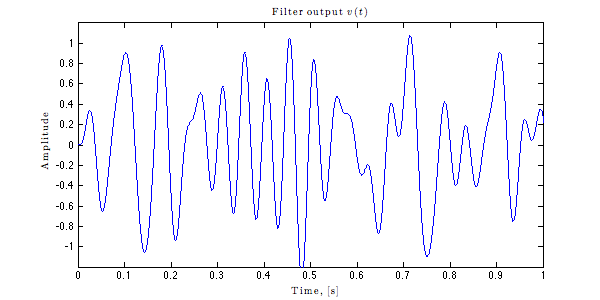
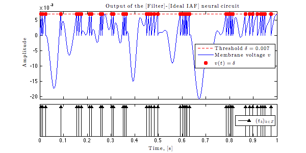

Identifying Dendritic Processing in a [Filter]-[Ideal IAF] neural circuit
This demo illustrates identification of the [Filter] in the [Filter]-[Ideal IAF] circuit using bandlimited input signals, i.e., signals that belong to the Paley-Wiener space.
The code below corresponds to Corollary 3 in [1] and was used to generate Figs. 4-6 in [1]. The employed filter was taken from [2].
[1] A.A. Lazar and Y.B. Slutskiy, Identifying Dendritic Processing, Advances in Neural Information Processing Systems 23, pp. 1261-1269, 2010
[2] E.H. Adelson and J R. Bergen, Spatiotemporal energy models for the perception of motion, Journal of the Optical Society of America, Vol 2(2),1985
Author: Yevgeniy B. Slutskiy
Revision Author: Chung-Heng Yeh
Copyright 2010-2012 Yevgeniy B. Slutskiy and Chung-Heng Yeh
Contents
- Initialize the demo
- Create a bandlimited stimulus. The bandwidth W = 2\pi*25 rad/s
- Specify the filter h to be used
- Compute the filter projection Ph
- Filter the input signal u
- Encode the filter output v=u*h with an IAF neuron
- Identify the filter projection Ph
- Generate Fig. 4 of [1]
- Generate Fig. 5 of [1]
- Generate Fig. 6 of [1]
Initialize the demo
clc; clear all; close all; % Reset the Matlab workspace. tic_demo = tic; % start the demo timer tic_init = tic; % start the initialization timer dt = 5e-6; % set the time step, [s] f = 25; % set the input signal bandwidth, [Hz] W = 2*pi*f; % calculate the bandwidth in [rad] Ts = pi/W; % calculate the sampling period in [s] t = 0:dt:1.12; % create a time vector for the input stimulus
Create a bandlimited stimulus. The bandwidth W = 2\pi*25 rad/s
randn('state', 19871127); % fix the state of randn() for reproducible results u = zeros(1,length(t)); % initialize the stimulus u(t) N_samp = floor((t(end)-t(1))/Ts); % find the number of stimulus samples ukT = randn(1,N_samp); % use randomly generated signal samples (e.g., from a Gaussian distribution) for k=1:N_samp u = u + ukT(k)*sinc(W*(t-k*Ts)/pi); % the first sample is zero end u = u/max(abs(u)); % normalize the input signal
Plot the stimulus
figure('Name','Input stimulus','Position',[0 0 600 300],'color','white'); plot(t, u); title('Input stimulus $u(t)$','Interpreter','latex'); axis([0 1 -1 1]); xlabel('Time, [s]','Interpreter','latex'); ylabel('Amplitude','Interpreter','latex');

Specify the filter h to be used
Generate a filter according to Adelson and Bergen in [2]. h has a temporal support on the interval [T_1, T_2]
T_1 = 0; T_2 = 0.1; % specify T_1 and T_2 t_filt = T_1:dt:T_2; % set the length of the impulse reponse, [s] a = 200; % set the filter parameter h = 3*a*exp(-a*t_filt).*((a*t_filt).^3/factorial(3)... -(a*t_filt).^5/factorial(5));
Plot the filter
figure('Name','Filter','Position',[0 0 600 300],'color','white'); plot(t_filt, h); axis([0 0.1 -50 100]); xlabel('Time, [s]','Interpreter','latex'); ylabel('Amplitude','Interpreter','latex'); title('Impulse response $h(t)$ of the filter','Interpreter','latex');

Compute the filter projection Ph
Ph is the projection of h onto the input signal space. It is the best approximation of h that can be recovered.
t_Ph = t - (t(1)+t(end))/2; % get the time vector for Ph g = W/pi*sinc(W*t_Ph/pi); % calculate the sinc kernel g Ph = dt*fftfilt(h,g); % find the projection Ph by convolving h with g
Plot the filter projection
idx = find( t_Ph > -0.05 & t_Ph < 0.15 ); figure('Name','Filter projection','Position',[0 0 600 300],'color','white'); plot(t_Ph(idx), Ph(idx)); %axis([-0.05 0.15 -50 100]); axis([0 0.1 -50 100]); xlabel('Time, [s]','Interpreter','latex'); ylabel('Amplitude','Interpreter','latex'); title('Filter projection $\mathcal{P}h(t)$','Interpreter','latex');

Filter the input signal u
Since all signals are finite, the filter output v=u*h is not calculated propertly on the boundaries. v_proper is that part of v, for which the convolution of u and h is computed correctly.
v = dt*fftfilt(h,u); % convolve u with h v_proper = v(length(h):end); % get the proper part of v t_proper = t(length(h):end); % get the correspoding time vector u_proper = u(length(h):end); % get the corresponding stimulus
Plot the filter output
figure('Name','Filter output v','Position',[0 0 600 300],'color','white'); plot(t,v); axis([0 1 -1.2 1.2]); xlabel('Time, [s]','Interpreter','latex'); ylabel('Amplitude','Interpreter','latex'); title('Filter output $v(t)$','Interpreter','latex');
Encode the filter output v=u*h with an IAF neuron
Specify parameters of the Ideal IAF neuron
delta = 0.007; % set the threshold bias = 0.28; % set the bias kappa = 1; % set capacitance [spk_train vol_trace] = ideal_iaf_encode(v_proper,t_proper,bias,delta,kappa); timer = toc(tic_init); % get the initialization time display(['Initialization time: ' num2str(floor(timer/60)) ''' ' num2str(timer - 60*floor(timer/60), '%3.1f') '"']);
Initialization time: 0' 2.1"
Plot the voltage trace and the associated spike train
figure('Name','Neural circuit output','Position',[0 0 600 300],'color','white'); subplot(7,1,1:5); plot([0 t_proper(end)-t_proper(1)], [delta delta], '--r'); hold on; plot(t_proper-t_proper(1),vol_trace,'b-'); plot(spk_train-t_proper(1), delta*ones(size(spk_train)), 'r.'); h_legend = legend(['Threshold $\delta=' num2str(delta) '$'], 'Membrane voltage $v\quad$', '$v(t)=\delta$', 'location','East'); set(h_legend, 'interpreter','latex'); axis([0 1 min(vol_trace) delta*1.1]); set(gca,'xticklabel',[]); ylabel('Amplitude','Interpreter','latex'); title('Output of the [Filter]-[Ideal IAF] neural circuit','Interpreter','latex'); subplot(7,1,6:7); stem(spk_train-t_proper(1), ones(size(spk_train)), '^k', 'filled'); set(gca,'yticklabel',[]); set(gca,'ytick',[]); axis([0 1 0 1.1]); xlabel('Time, [s]','Interpreter','latex'); h_legend = legend('$(t_k)_{k\in Z}$', 'location','East'); set(h_legend, 'interpreter','latex');
Identify the filter projection Ph
Since the temporal support of the filter h is not known, we identify the projection Ph in a window W = [tau_1, tau_2]. Temporal windows W^i of spikes can be chose arbitrarily. Here we pick W^i so that the Nyquist-type condition on the density of spikes is achieved quickly (see also Theorem 1 and Remark 1 in [1]).
T_filt_rec = 0.12; % specify the hypothesized length of the implulse response tau_1 = -(T_filt_rec - t_filt(end))/2; % get tau_1 and tau_2. Here W is centered around the actual tau_2 = t_filt(end)-tau_1; % temporal support T_2-T_1 N_max = 10; % set the maximum number of windows to be used (could be smaller depending on the simulation) tic_CIM = tic; % start the algorithm timer [h_hat windows] = identify_h_ideal_iaf(dt, t_Ph, t_proper, u_proper, W, bias, delta, kappa,... spk_train, tau_1, tau_2, N_max); timer = toc(tic_CIM); % stop the algorithm timer display(['CIM running time: ' num2str(floor(timer/60)) ''' ' num2str(timer - 60*floor(timer/60), '%3.1f') '"']);
CIM running time: 0' 0.4"
Generate Fig. 4 of [1]
figure('Name','NIPS 2010 Fig. 4','Position',[0 0 1440 1080],'color','white') % plot the input stimulus u subplot(321); plot(t_proper - t_proper(1), u_proper); title('$(a)\qquad$Input signal u(t)','Interpreter','latex'); h_legend = legend(['$\Omega = 2\pi\cdot$' num2str(f) 'rad/s$\qquad$']); set(h_legend,'Interpreter','latex'); axis([0 1 -1 1]); ylabel('Amplitude','interpreter','latex'); % plot the spike train tk of the IAF neuron and windows W^i subplot(323); N = length(windows); D = bias*kappa/delta; stem(spk_train(1)-t_proper(1), 1.1, '^k', 'filled'); base_palette = 'crgbym'; palette = zeros(1,N); for j=1:N palette(j) = char( base_palette( mod(j,6) + 1 ) ); x = [windows{j}(1) windows{j}(end) windows{j}(end) windows{j}(1)] - t_filt(end); y = [1e-2 1e-2 1.2-1e-2 1.2-1e-2]; patch(x,y,base_palette(mod(j,6)+1),'facealpha',1,'line','none'); hold on; end stem(spk_train-t_proper(1), 1.1*ones(size(spk_train)), '^k', 'filled'); hold on; box on; set(gca,'yticklabel',[]); set(gca,'ytick',[]); title('$(b)\qquad$Output of the [Filter]-[Ideal IAF] neural circuit','Interpreter','latex'); h_legend = legend(['$D = ' num2str(D,'%3.0f') '\;$Hz'],['Windows $\{W^i\}_{i=1}^{' num2str(N) '}\quad$'],'Location','East'); set(h_legend,'Interpreter','latex'); axis([0 1 0 1.2]); % plot h, Ph and h_hat (the filter identified by the algorithm) subplot(325); % h_long is a zero-padded version of h (of the same size as t_Ph) h_long = zeros(size(t_Ph)); h_long( find(abs(t_Ph-t_filt(1))<dt/2): find(abs(t_Ph-t_filt(end))<dt/2) ) = h; t_frame_start = tau_1; t_frame_end = tau_2; % specify the temporal window on which to compute the MSE t_frame_i = (t_Ph>=t_frame_start) & (t_Ph<=t_frame_end); % find indices of t for the given frame t % Normalized RMSE between h and h_hat h_hhat_err = abs(h_long-h_hat)/max(abs(h_long)); % compute the absolute error h_hhat_RMSE = sqrt(dt*trapz(h_hhat_err(t_frame_i).^2)/ ... % compute the RMSE (length(t_frame_i)*dt)); % Normalized RMSE between Ph and h_hat Ph_hhat_err = abs(Ph-h_hat)/max(abs(Ph)); % compute the absolute error Ph_hhat_RMSE = sqrt(dt*trapz(Ph_hhat_err(t_frame_i).^2)/ ...% compute the RMSE (length(t_frame_i)*dt)); plot(t_Ph, h_long,'--k',t_Ph, Ph,'-b',t_Ph,h_hat,'-r'); h_title = title('$(c)\qquad$Original filter vs. the identified filter','Interpreter','latex'); h_legend = legend(['$h,\,$RMSE$(\hat{h},h)$ =' num2str(h_hhat_RMSE, '%3.2e') '$\quad$'],... ['$\mathcal{P}h,\,$RMSE$(\hat{h},\mathcal{P}h)$ =' num2str(Ph_hhat_RMSE, '%3.2e') '$\qquad$'],... '$\hat{h}$','Location','NorthEast'); set(h_legend,'Interpreter','latex'); axis([-0.05 0.15 -50 100]); ylabel('Amplitude','interpreter','latex'); xlabel('Time, [s]','interpreter','latex'); % plot the periodogram power spectrum estmate of u subplot(322); Fs = 1/dt; % get the sampling frequency h_spctr = spectrum.periodogram('hamming'); % use a spectral estimator with a hamming window hopts = msspectrumopts(h_spctr,u_proper); set(hopts,'Fs',Fs,'SpectrumType','onesided','centerdc',true); Hmss = msspectrum(h_spctr,u_proper,hopts); plot(Hmss.frequencies,10*log10(Hmss.data)); axis([-150 150 -100 0]); grid on; h_title = title(''); set(h_title,'Interpreter','latex'); title('$(d)\qquad$Periodogram Power Spectrum Estimate of u(t)'); ylabel('Power, [dB]','interpreter','latex'); h_legend = legend('supp$(\mathcal{F}u)=[-\Omega,\Omega]\qquad$'); set(h_legend,'Interpreter','latex'); % plot the periodogram power spectrum estmate of h subplot(324); h_temp = zeros(size(t_proper)); h_temp(1:length(h)) = h; hopts = msspectrumopts(h_spctr,h_temp); set(hopts,'Fs',Fs,'SpectrumType','onesided','centerdc',true); Hmss = msspectrum(h_spctr,h_temp,hopts); plot(Hmss.frequencies,10*log10(Hmss.data)); axis([-150 150 -100 0]); grid on; h_title = title(''); set(h_title,'Interpreter','latex'); title('$(e)\qquad$Periodogram Power Spectrum Estimate of h(t)'); ylabel('Power, [dB]','interpreter','latex'); h_legend = legend('supp$(\mathcal{F}h)\supset[-\Omega,\Omega]\qquad$'); set(h_legend,'Interpreter','latex'); % plot the periodogram power spectrum estmate of v=u*h subplot(326); hopts = msspectrumopts(h_spctr,v_proper); set(hopts,'Fs',Fs,'SpectrumType','onesided','centerdc',true); Hmss = msspectrum(h_spctr,v_proper,hopts); plot(Hmss.frequencies,10*log10(Hmss.data)); axis([-150 150 -100 0]); grid on; h_title = title(''); set(h_title,'Interpreter','latex'); title('$(f)\qquad$Periodogram Power Spectrum Estimate of v(t)'); xlabel('Frequency, [Hz]','interpreter','latex'); ylabel('Power, [dB]','interpreter','latex'); h_legend = legend('supp$(\mathcal{F}v)=[-\Omega,\Omega]\qquad$'); set(h_legend,'Interpreter','latex');
Generate Fig. 5 of [1]
The follwoing procedures are same as above except that the input stimulus is now bandlimited to 100Hz.
dt = 1e-6; % set the time step, [s] f = 100; % set the input signal bandwidth, [Hz] W = 2*pi*f; % calculate the bandwidth in [rad] Ts = pi/W; % calculate the sampling period in [s] t = 0:dt:1.52; % create a time vector for the input stimulus
Create a bandlimited stimulus. The bandwidth W = 2\pi*100 rad/s
randn('state', 19871127); % fix the state of randn() for reproducible results u = zeros(1,length(t)); % initialize the stimulus u(t) N_samp = floor((t(end)-t(1))/Ts); % find the number of stimulus samples ukT = randn(1,N_samp); % use randomly generated signal samples (e.g., from a Gaussian distribution) for k=1:N_samp u = u + ukT(k)*sinc(W*(t-k*Ts)/pi); % the first sample is zero end u = u/max(abs(u)); % normalize the input signal
Specify the filter h to be used
T_1 = 0; T_2 = 0.1; % specify T_1 and T_2 t_filt = T_1:dt:T_2; % set the length of the impulse reponse, [s] a = 200; % set the filter parameter h = 3*a*exp(-a*t_filt).*((a*t_filt).^3/factorial(3)... -(a*t_filt).^5/factorial(5));
Compute the filter projection Ph
t_Ph = t - (t(1)+t(end))/2; % get the time vector for Ph g = W/pi*sinc(W*t_Ph/pi); % calculate the sinc kernel g Ph = dt*fftfilt(h,g); % find the projection Ph by convolving h with g
Filter the input signal u
v = dt*fftfilt(h,u); % convolve u with h v_proper = v(length(h):end); % get the proper part of v t_proper = t(length(h):end); % get the correspoding time vector u_proper = u(length(h):end); % get the corresponding stimulus
Encode the filter output v=u*h with an IAF neuron
delta = 0.007; % set the threshold bias = 0.28; % set the bias kappa = 1; % set capacitance [spk_train vol_trace] = ideal_iaf_encode(v_proper,t_proper,bias,delta,kappa);
Identify the filter projection Ph
T_filt_rec = 0.11; % specify the hypothesized length of the implulse response tau_1 = -(T_filt_rec - t_filt(end))/2; % get tau_1 and tau_2. Here W is centered around the actual tau_2 = t_filt(end)-tau_1; % temporal support T_2-T_1 show_subpopulation = 0; % use this flag to show recovery results from subsets of N N_max = 10; % set the maximum number of windows to be used (could be smaller depending on the simulation) tic_CIM = tic; % start the algorithm timer [h_hat windows] = identify_h_ideal_iaf(dt, t_Ph, t_proper, u_proper, W, bias, delta, kappa,... spk_train, tau_1, tau_2, N_max); timer = toc(tic_CIM); % stop the algorithm timer display(['CIM running time: ' num2str(floor(timer/60)) ''' ' num2str(timer - 60*floor(timer/60), '%3.1f') '"']);
CIM running time: 0' 4.5"
Plot the results
figure('Name','NIPS 2010 Fig. 5','Position',[0 0 1440 1080],'color','white') % plot the input stimulus u subplot(321); plot(t_proper - t_proper(1), u_proper); title('$(a)\qquad$Input signal u(t)','Interpreter','latex'); h_legend = legend(['$\Omega = 2\pi\cdot$' num2str(f) 'rad/s$\qquad$']); set(h_legend,'Interpreter','latex'); axis([0 1.4 -1 1]); ylabel('Amplitude','interpreter','latex'); % plot the spike train tk of the IAF neuron and windows W^i subplot(323); N = length(windows); D = bias*kappa/delta; stem(spk_train(1)-t_proper(1), 1.1, '^k', 'filled'); base_palette = 'crgbym'; for j=1:N x = [windows{j}(1) windows{j}(end) windows{j}(end) windows{j}(1)] - t_filt(end); y = [1e-2 1e-2 1.2-1e-2 1.2-1e-2]; patch(x,y,base_palette(mod(j,6)+1),'facealpha',1,'line','none'); hold on; end stem(spk_train-t_proper(1), 1.1*ones(size(spk_train)), '^k', 'filled'); hold on; box on; set(gca,'yticklabel',[]); set(gca,'ytick',[]); title('$(b)\qquad$Output of the [Filter]-[Ideal IAF] neural circuit','Interpreter','latex'); h_legend = legend(['$D = ' num2str(D,'%3.0f') '\;$Hz'],['Windows $\{W^i\}_{i=1}^{' num2str(N) '}\quad$'],'Location','East'); set(h_legend,'Interpreter','latex'); axis([0 1.4 0 1.2]); % plot h, Ph and h_hat (the filter identified by the algorithm) subplot(325); % h_long is a zero-padded version of h (of the same size as t_Ph) h_long = zeros(size(t_Ph)); h_long( find(abs(t_Ph-t_filt(1))<dt/2): find(abs(t_Ph-t_filt(end))<dt/2) ) = h; t_frame_start = tau_1; t_frame_end = tau_2; % specify the temporal window on which to compute the MSE t_frame_i = (t_Ph>=t_frame_start) & (t_Ph<=t_frame_end); % find indices of t for the given frame t % Normalized RMSE between h and h_hat h_hhat_err = abs(h_long-h_hat)/max(abs(h_long)); % compute the absolute error h_hhat_RMSE = sqrt(dt*trapz(h_hhat_err(t_frame_i).^2)/ ... % compute the RMSE (length(t_frame_i)*dt)); % Normalized RMSE between Ph and h_hat Ph_hhat_err = abs(Ph-h_hat)/max(abs(Ph)); % compute the absolute error Ph_hhat_RMSE = sqrt(dt*trapz(Ph_hhat_err(t_frame_i).^2)/ ...% compute the RMSE (length(t_frame_i)*dt)); plot(t_Ph, h_long,'--k',t_Ph, Ph,'-b',t_Ph,h_hat,'-r'); h_title = title('$(c)\qquad$Original filter vs. the identified filter','Interpreter','latex'); h_legend = legend(['$h,\,$RMSE$(\hat{h},h)$ =' num2str(h_hhat_RMSE, '%3.2e') '$\quad$'],... ['$\mathcal{P}h,\,$RMSE$(\hat{h},\mathcal{P}h)$ =' num2str(Ph_hhat_RMSE, '%3.2e') '$\qquad$'],... '$\hat{h}$','Location','NorthEast'); set(h_legend,'Interpreter','latex'); axis([-0.05 0.15 -50 100]); ylabel('Amplitude','interpreter','latex'); xlabel('Time, [s]','interpreter','latex'); % plot the periodogram power spectrum estmate of u subplot(322); Fs = 1/dt; % get the sampling frequency h_spctr = spectrum.periodogram('hamming'); % use a spectral estimator with a hamming window hopts = msspectrumopts(h_spctr,u_proper); set(hopts,'Fs',Fs,'SpectrumType','onesided','centerdc',true); Hmss = msspectrum(h_spctr,u_proper,hopts); plot(Hmss.frequencies,10*log10(Hmss.data)); axis([-150 150 -100 0]); grid on; h_title = title(''); set(h_title,'Interpreter','latex'); title('$(d)\qquad$Periodogram Power Spectrum Estimate of u(t)'); ylabel('Power, [dB]','interpreter','latex'); h_legend = legend('supp$(\mathcal{F}u)=[-\Omega,\Omega]\qquad$'); set(h_legend,'Interpreter','latex'); % plot the periodogram power spectrum estmate of h subplot(324); h_temp = zeros(size(t_proper)); h_temp(1:length(h)) = h; hopts = msspectrumopts(h_spctr,h_temp); set(hopts,'Fs',Fs,'SpectrumType','onesided','centerdc',true); Hmss = msspectrum(h_spctr,h_temp,hopts); plot(Hmss.frequencies,10*log10(Hmss.data)); axis([-150 150 -100 0]); grid on; h_title = title(''); set(h_title,'Interpreter','latex'); title('$(e)\qquad$Periodogram Power Spectrum Estimate of h(t)'); ylabel('Power, [dB]','interpreter','latex'); h_legend = legend('supp$(\mathcal{F}h)\supset[-\Omega,\Omega]\qquad$'); set(h_legend,'Interpreter','latex'); % plot the periodogram power spectrum estmate of v=u*h subplot(326); hopts = msspectrumopts(h_spctr,v_proper); set(hopts,'Fs',Fs,'SpectrumType','onesided','centerdc',true); Hmss = msspectrum(h_spctr,v_proper,hopts); plot(Hmss.frequencies,10*log10(Hmss.data)); axis([-150 150 -100 0]); grid on; h_title = title(''); set(h_title,'Interpreter','latex'); title('$(f)\qquad$Periodogram Power Spectrum Estimate of v(t)'); xlabel('Frequency, [Hz]','interpreter','latex'); ylabel('Power, [dB]','interpreter','latex'); h_legend = legend('supp$(\mathcal{F}v)=[-\Omega,\Omega]\qquad$'); set(h_legend,'Interpreter','latex');

Generate Fig. 6 of [1]
In Fig. 6a we plot the mean square error (MSE) between the filter projection Ph and the identified filter h_hat as a function of the number of temporal windows N.
In Fig. 6b we plot the mean square error (MSE) between the original filter h and the identified filter h_hat as a function of the input signal bandwidth
% The following simulation is somewhat time-consuming (10 min). Use the % flag below to specify whether or not to generate the figure. Generate_Figure6 = 1; if Generate_Figure6 == 1
Fig6_tic = tic; % initialize the timer dt = 5e-6; % set the time step, [s] f = 100; % set the input signal bandwidth, [Hz] W = 2*pi*f; % calculate the bandwidth in [rad] Ts = pi/W; % calculate the sampling period in [s] t = 0:dt:8.5; % create a time vector for the input stimulus
Create a bandlimited stimulus. The bandwidth W = 2\pi*100 rad/s
randn('state', 19871127); % fix the state of randn() for reproducible results u = zeros(1,length(t)); % initialize the stimulus u(t) N_samp = floor((t(end)-t(1))/Ts); % find the number of stimulus samples ukT = randn(1,N_samp); % use randomly generated signal samples (e.g., from a Gaussian distribution) for k=1:N_samp u = u + ukT(k)*sinc(W*(t-k*Ts)/pi); % the first sample is zero end u = u/max(abs(u)); % normalize the input signal
Specify the filter h to be used
T_1 = 0; T_2 = 0.1; % specify T_1 and T_2 t_filt = T_1:dt:T_2; % set the length of the impulse reponse, [s] a = 200; % set the filter parameter h = 3*a*exp(-a*t_filt).*((a*t_filt).^3/factorial(3)... -(a*t_filt).^5/factorial(5));
Compute the filter projection Ph
t_Ph = t - (t(1)+t(end))/2; % get the time vector for Ph g = W/pi*sinc(W*t_Ph/pi); % calculate the sinc kernel g Ph = dt*fftfilt(h,g); % find the projection Ph by convolving h with g
Filter the input signal u
v = dt*fftfilt(h,u); % convolve u with h v_proper = v(length(h):end); % get the proper part of v t_proper = t(length(h):end); % get the correspoding time vector u_proper = u(length(h):end); % get the corresponding stimulus
Get data for Fig. 6a
To demonstrate how the MSE changes as a function of the neuron spike density D, we encode the input signal with an IAF neuron having a different bias b = D*delta/kappa.
Fig6a_tic = tic; % initialize the timer D = [20 40 60]; % set the average spiking density MSE_palette = 'kbr'; % set the color palette for plotting MSE_N = cell(3,1); % initialize the MSE cell N_max = 30; % set the maximum number of windows to be used t_frame_start = tau_1; t_frame_end = tau_2; % specify the temporal window on which to compute the MSE t_frame_i = (t_Ph>=t_frame_start) & (t_Ph<=t_frame_end); % find indices of t for the given frame t T_filt_rec = 0.11; % specify the hypothesized length of the implulse response tau_1 = -(T_filt_rec - t_filt(end))/2; % get tau_1 and tau_2. Here W is centered around the actual tau_2 = t_filt(end)-tau_1; % temporal support T_2-T_1 show_all_windows = 0; % use this flag to show recovery from individual windows show_MSE_N = 1; % use this flag to show error as a function of the number of windows N for counter = 1:length(D) bias = D(counter)*delta/kappa; % set the bias delta = 0.007; % set the threshold kappa = 1; % set capacitance % Encode the filter output v=u*h with an IAF neuron [spk_train vol_trace] = ideal_iaf_encode(v_proper,t_proper,bias,delta,kappa); % Identify the filter projection Ph, calculate MSE as a function of N [h_hat windows h_hat_N] ... = identify_h_ideal_iaf(dt, t_Ph, t_proper, u_proper, W, bias,... delta, kappa, spk_train, tau_1, tau_2,... N_max,'Calc_MSE_N',true); N = length(windows); % Compute the normalized MSE MSE_N{counter} = zeros(1,N); for i=1:N % Normalized RMSE error for Ph - h_hat Ph_hhat_err = abs(Ph-h_hat_N(i,:))/max(abs(Ph)); Ph_hhat_RMSE = sqrt(dt*trapz(Ph_hhat_err(t_frame_i).^2)/ ... (length(t_frame_i)*dt)); MSE_N{counter}(i) = 10*log10( Ph_hhat_RMSE^2 ); end end timer = toc(Fig6a_tic); display(['Fig. 6a time: ' num2str(floor(timer/60)) ''' ' num2str(timer - 60*floor(timer/60), '%3.1f') '"']);
Fig. 6a time: 7' 18.2"
Get data for Fig. 6b
In the following, for fixed number of windows N, we compute the MSE between the original filter h and the identified filter h_hat as a function of the input signal bandwidth
Fig6b_tic = tic; % initialize the timer f = 10:10:150; % specify the bandwidth vector t = 0:dt:1.52; % specify the time vector N = 10; % set the number of windows % specify Ideal IAF neuron parameters delta = 0.007; % set the threshold bias = 0.42; % set the bias kappa = 1; % set the capacitance MSE_BW = zeros(1,length(f)); for counter = 1:length(f) W = 2*pi*f(counter); % calculate the bandwidth in [rad] Ts = pi/W; % calculate the sampling period in [s] % Create a bandlimited signal randn('state', 19871127); % fix the state of randn() for reproducible results u = zeros(1,length(t)); % initialize the stimulus u(t) N_samp = floor((t(end)-t(1))/Ts); % find the number of stimulus samples ukT = randn(1,N_samp); % use randomly generated signal samples (e.g., from a Gaussian distribution) for k=1:N_samp u = u + ukT(k)*sinc(W*(t-k*Ts)/pi); % the first sample is zero end u = u/max(abs(u)); % normalize the input signal % Compute the filter projection Ph t_Ph = t - (t(1)+t(end))/2; % get the time vector for Ph g = W/pi*sinc(W*t_Ph/pi); % calculate the sinc kernel g Ph = dt*fftfilt(h,g); % find the projection Ph by convolving h with g % Filter the input signal u v = dt*fftfilt(h,u); % convolve u with h v_proper = v(length(h):end); % get the proper part of v t_proper = t(length(h):end); % get the correspoding time vector u_proper = u(length(h):end); % get the corresponding stimulus % Encode the filter output v=u*h with an IAF neuron [spk_train vol_trace] = ideal_iaf_encode(v_proper,t_proper,bias,delta,kappa); % Identify the filter projection h_hat = identify_h_ideal_iaf(dt, t_Ph, t_proper, u_proper, W, bias, delta,... kappa, spk_train, tau_1, tau_2, N_max); % Compute the MSE % h_long is a zero-padded version of h (of the same size as t_Ph) h_long = zeros(size(t_Ph)); h_long( find(abs(t_Ph-t_filt(1))<dt/2): find(abs(t_Ph-t_filt(end))<dt/2) ) = h; t_frame_start = tau_1; t_frame_end = tau_2; % specify the temporal window on which to compute the MSE t_frame_i = (t_Ph>=t_frame_start) & (t_Ph<=t_frame_end); % find indices of t for the given frame t % Normalized RMSE between h and h_hat h_hhat_err = abs(h_long-h_hat)/max(abs(h_long)); % compute the absolute error h_hhat_RMSE = sqrt(dt*trapz(h_hhat_err(t_frame_i).^2)/ ... % compute the RMSE (length(t_frame_i)*dt)); MSE_BW(counter) = 10*log10( h_hhat_RMSE ^2 ); end timer = toc(Fig6b_tic); display(['Fig. 6b time: ' num2str(floor(timer/60)) ''' ' num2str(timer - 60*floor(timer/60), '%3.1f') '"']);
Fig. 6b time: 1' 8.1"
Plot Fig. 6 of [1]
figure('Name','NIPS 2010 Fig. 6','Position',[0 0 1200 800], 'color', 'white'); subplot(211) % MSE vs number of windows marker = 'osd'; marker_size = [5 5 7]; for counter = 1:length(D) plot(1:length(MSE_N{counter}),MSE_N{counter}, ['-' MSE_palette(counter)],... 'Marker', marker(counter), 'MarkerFaceColor', MSE_palette(counter), 'markersize', marker_size(counter)); hold on; end for counter = 1:length(D) plot([2*pi*100/(pi*D(counter)) 2*pi*100/(pi*D(counter))], [-100 20], ... ['--' MSE_palette(counter)]); hold on; end title('MSE$(\hat{h},\mathcal{P}h)$ vs. the Number of Temporal Windows','interpreter','latex'); xlabel('Number of Windows $N$','interpreter','latex'); ylabel('MSE$(\hat{h},\mathcal{P}h)$, [dB]','interpreter','latex'); h_legend = legend('$D = 20\;$Hz','$D = 40\;$Hz','$D = 60\;$Hz', '$\Omega/(\pi D_1)$', '$\Omega/(\pi D_2)$','$\Omega/(\pi D_3)$', 'Location','NorthEast'); set(h_legend,'interpreter','latex'); axis([0 30 -100 20]); subplot(212) plot( f, MSE_BW, '-b','Marker', 'o', 'MarkerFaceColor', 'b', 'markersize', 5); h_title = title('MSE$(\hat{h},h)$ vs. input signal bandwidth','interpreter','latex'); xlabel('Input signal bandwidth $\Omega/(2\pi)$, [Hz]','interpreter','latex'); ylabel('MSE$(\hat{h},h)$, [dB]','interpreter','latex'); h_legend = legend(['$D = 60\;$Hz, $N = ' num2str(N) '\quad$'], ... 'Location','NorthEast'); set(h_legend,'interpreter','latex'); axis([10 150 -70 0]); set(gca,'xtick',10:10:150) timer = toc(Fig6_tic); display(['Total Fig. 6 time: ' num2str(floor(timer/60)) ''' ' num2str(timer - 60*floor(timer/60), '%3.1f') '"']);
Total Fig. 6 time: 10' 11.2"
end timer = toc(tic_demo); % stop the algorithm timer display(['Demo time: ' num2str(floor(timer/60)) ''' ' num2str(timer - 60*floor(timer/60), '%3.1f') '"']);
Demo time: 10' 55.9"